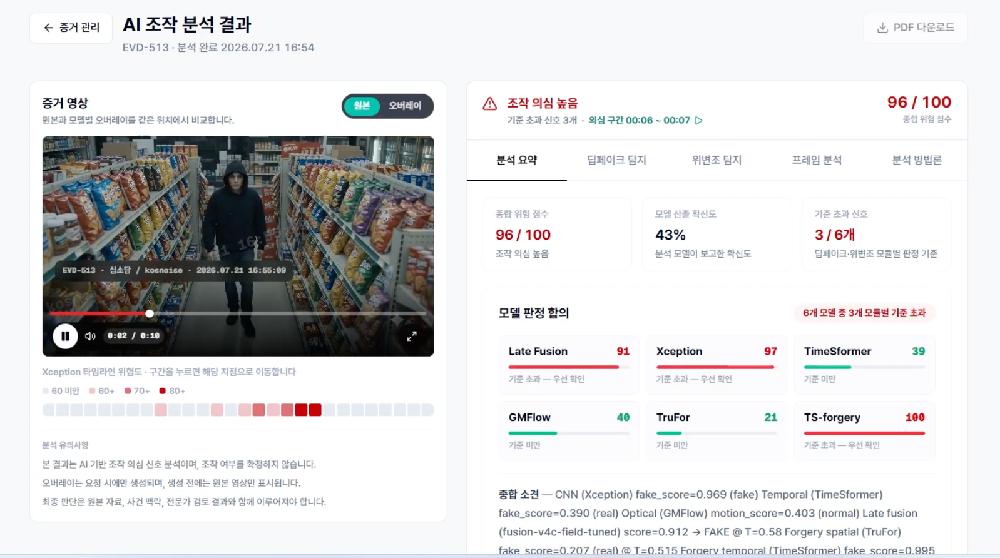
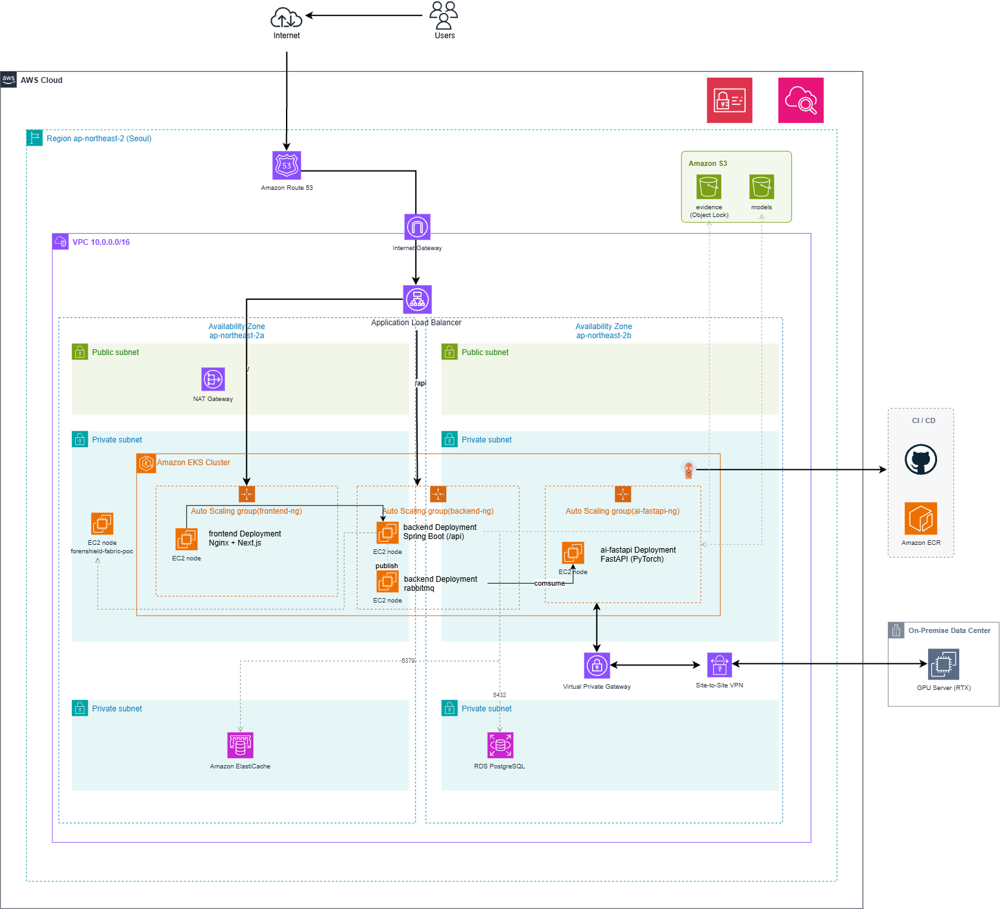

ForenShield01
AI 딥페이크 탐지·증거 무결성 검증 플랫폼
EKS–GPU 연동부터 장애 복구·자동화까지 담당했습니다.
나의 역할 Cloud/DevOps · GPU 추론 파이프라인 통합 · 장애 대응
장애 대응 3가지 장애 대응
01 · 연결 복구분석 중단 복구NodePort·접속 IP 수정 → 실제 분석·결과 조회 확인
메시지는 쌓이는데, 분석은 진행되지 않았습니다.
교육 환경의 비용 절감을 위해 EKS를 재생성한 뒤 발생한 장애입니다. 당시에는 GPU Worker가 RabbitMQ를 직접 소비하는 초기 구조였습니다.
- Queue에 요청 적재 확인
요청이 큐에 들어온 사실을 확인하고, 그 이후의 소비 구간을 점검했습니다.
- Consumer 수 0 확인
모델 추론 속도를 의심하기 전에 Consumer의 연결 상태를 확인했습니다.
- Service와 접속 주소 대조
NodePort Service 미복구와 변경된 Node Private IP가 GPU 설정에 반영되지 않은 문제를 확인했습니다.
- 복구 후 사용자 흐름 검증
Service 복구·접속 정보 동기화·Worker 재시작 후 Consumer 연결, Queue 감소, 실제 분석 완료와 결과 조회를 확인했습니다.
Terraform·PowerShell로 인프라 재생성과 연결 확인 절차를 자동화하고, 배포·헬스체크·장애 대응 기준을 운영 핸드북으로 남겼습니다.
AI 모델 자체의 학습이 아니라, 팀원의 모델 코드를 서비스용 추론 흐름으로 연결한 경험입니다.
02 · VPN 라우팅응답 경로 충돌 해결대역·정책 라우팅 조정 → GPU Gateway 통신 확인
- 증상
- 공유 GPU 서버에서 VPN 터널은 연결됐지만 응답 통신이 정상적으로 돌아오지 않았습니다.
- 판단
- 두 팀의 터널에 설정된 rightsubnet 대역이 겹쳐, 응답이 합의한 터널 2가 아닌 터널 1로 향하는 경로 충돌을 확인했습니다.
- 조치
- 대상 CIDR을 좁히고 패킷 마크와 정책 기반 라우팅을 적용해 응답 경로를 터널 2로 맞췄습니다.
- 확인
- 터널 상태뿐 아니라 EKS에서 nc·curl로 GPU Gateway 연결과 헬스체크 응답을 확인했습니다.
03 · GPU 메모리OOM 완화를 위한 실행 제어해상도 조정·동시 실행 제한 → 메모리 부담 완화
- 증상
- 다른 팀과 공유한 GPU에서 GMFlow 추론과 오버레이 생성 중 VRAM 부족 오류가 발생했습니다.
- 판단
- GPU 서버 로그와 nvidia-smi로 메모리 사용을 확인하고, 해상도와 작업 동시 실행을 줄이는 방향으로 대응했습니다.
- 조치
- GMFlow 입력 해상도를 낮추고 추론 후 불필요한 메모리·캐시를 정리했습니다. 오버레이는 요청 시 생성하고, GPU lock으로 우리 파이프라인의 분석과 오버레이 동시 실행을 제한했습니다.
- 트레이드오프
- 처리량·대기시간보다 OOM 완화를 우선했습니다. 캐시 정리만으로 사용 중인 텐서가 해제되는 것은 아니며, 다른 팀의 GPU 사용까지 제어한 것은 아닙니다.
OOM 완화 조치이며, 재발률·성능 개선 수치는 별도로 측정하지 않았습니다.
서비스 화면

전체 아키텍처
저장·상태: S3 · RDS · Redis / 배포: GitHub Actions → ECR · Manifest → Argo CD
프로젝트 원본 구성도 펼쳐보기
아래는 프로젝트 당시 원본 구성도입니다. 원본의 AI 배포 표기와 달리 최종 구조에서는 EKS AI Consumer가 큐를 소비하고, 외부 GPU Gateway가 모델 추론을 수행합니다.
